Sigurnost u PostgreSQL-u
Temu rezervirala: Marija Jerbić
Sadržaj |
Uvod
PostgreSQL jedna je od najnaprednijih open source baza podataka na svijetu, ali 82 dokumentirane sigurnosne ranjivosti također ju čine vrlo ranjivom. Odobreno, popularna objektno-relacijska baza smatra se superiornom kada je riječ o sigurnosti, no potrebne je provesti odgovarajuće mjere zaštite podataka.
Prava pristupa
Grupe i uloge
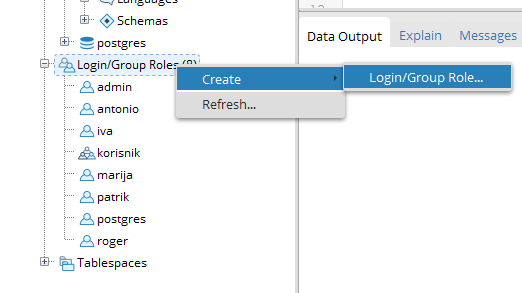
Slika 1. Kreiranje grupa
{kind=link}
Prilikom kreiranja grupa i korisnika, preporuka je zaštititi nadzor pristupa unutar PostgreSQL baze podataka. PostgreSQL ima nekoliko super uloga koje gotovo jamče sve privilegije. Te super uloge treba stalno pregledavati zbog neovlaštenog pristupa. U većini slučajeva uloga SUPERUSER-a te privilegije CREATEROLE i CREATEDB, trebaju biti ograničene na administratora baze podataka. Korištenje grupa/uloga su, u PostgreSQL-u, ista stvar. Ne postoji razlika između navedena dva kao u drugim sustavima za upravljanje bazom podataka, tako da prilikom stvaranja korisnika stvarate ulogu.
U sovjoj bazi podataka kreirala sam dvije grupe: korisnik i admin. Kao što se može vidjeti na slici, administrator ima privilegije superuser-a dok obični korisnik nema privilegija. Nakon toga, kreirala sam par uloga te sam svakome od njih odredila da li su član grupe korisnika ili grupe administratora te su time nasljedili privilegije dane grupe.
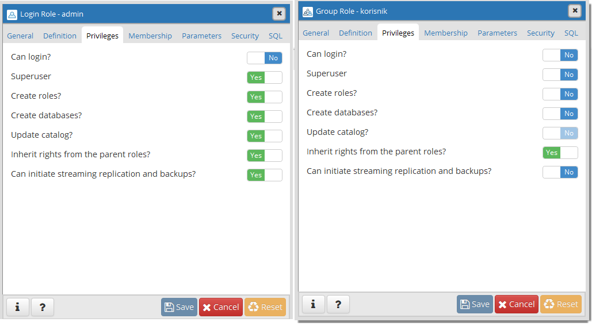
Slika 2. Privilegije grupe administratira i korisnika
{kind=link}
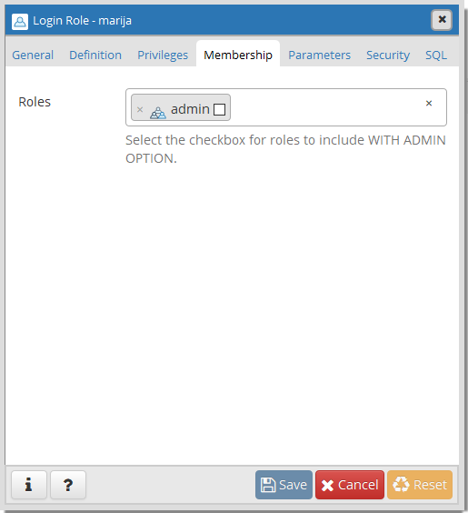
Slika 3. Kreiranje korisnika sa ulogom administratora
{kind=link}
Podjelom korisnika u grupe onemogućavamo korisnicima pregled tablica te bilo kakve promjene tablica nad kojima nemaju prava pristupa. Na sljedećoj slici možemo vidjeti da je korisnik 'iva' pokušao pristupiti tablici 'grupa' koju je krenirao korisnik 'antonio'. Pošto korisnik iva nema prava pristupa nad tablicom grupa, ne može joj ni pristupiti.
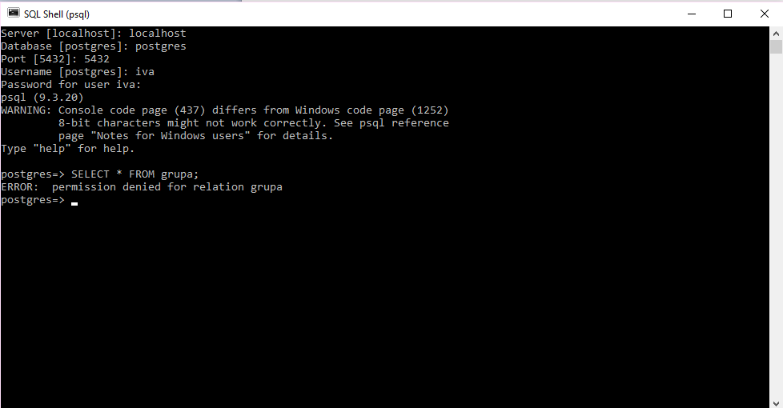
Slika 5. Nedopušten pristup tablicama [4]
{kind=link}
Ako bi korisnik ‘antonio’ želio dozvoliti pristup tablici ‘grupa’ (SELECT) korisniku ‘iva’, to će napraviti uz pomoć naredbe GRANT.
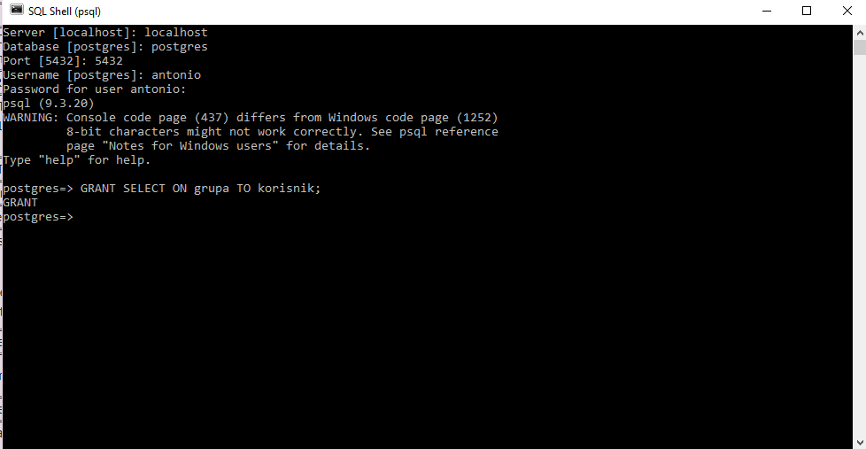
Slika 6. Dopušten pristup tablici [5]
{kind=link}
Na sljedećoj slici možemo vidjeti kako korisnik ‘iva’ sada može vidjeti tablicu ‘grupa’.
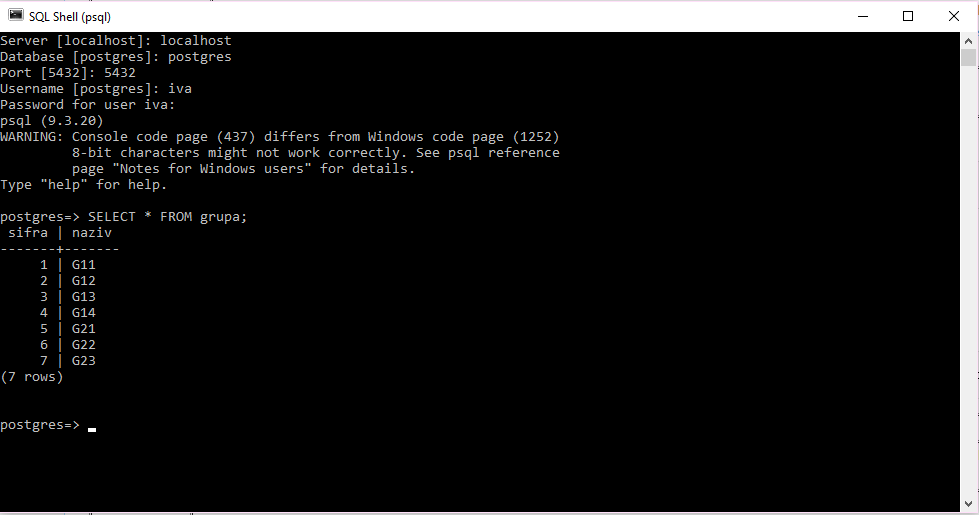
Slika 7. Mogućnost pristupa tablici grupa [6]
{kind=link}
Lozinke
Lozinke se pohranjuju kao nekriptirane ili kriptirane. Nekriptirane lozinke se pohranjuju kao čisti tekst i može ih se pročitati od strane superuser-a. Kriptiranje lozinke uključuje generiranje i pohranjivanje kao MD5 hash, koji se ne može čitati. Lozinka se potvrđuje prilikom prijave pomoću hash-a uspoređujući ga s onim što je već pohranjeno u klasteru podataka.
Hashevi su jednosmjerni te su najbolji za podatke poput lozinke kod koje samo treba provjeriti podudaranje a ne treba ju dešifrirati.
Slijedi nekoliko primjera stvaranja i upravljanja zaporkom:
- Račun se stvara bez zaporke:
CREATE ROLE user1 WITH LOGIN;
- Račun se stvara s nekriptiranom zaporkom:
CREATE ROLE roger WITH LOGIN UNENCRYPTED PASSWORD '123';
- Promjena računa te dodjela kriptirane lozinke:
ALTER ROLE user1 WITH ENCRYPTED PASSWORD '123'
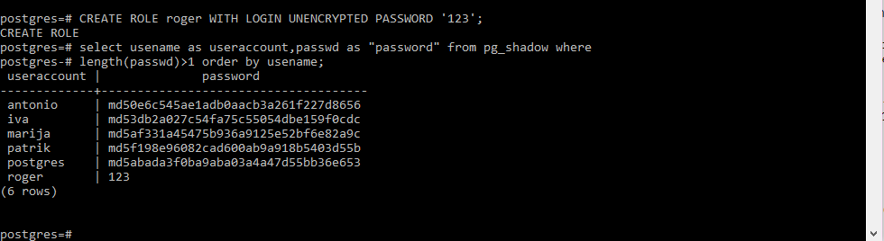
Slika 4. Pristup lozinkama
{kind=link}
Moguća sigurnosna ograničenja uključuju:
- Superuser ne može postaviti minimalni broj znakova koji će se koristiti za lozinku
- Iako u postavkama konfiguracije postoji zadani parametar za pohranjivanje lozinke (nekriptiranog ili kriptiranog kao MD5 hash), korisnik ne može biti prisiljen primijeniti određeni način pohrane od strane nadređenog.
- Mehanizam koji kontrolira učinkoviti životni vijek lozinke za korisnički račun postaje nevažan kada je metoda povezivanja drugačija od PASSWORD ili MD5 u datoteci konfiguracije autentifikacije klijenta, pg_hba.conf.
- Parametri korisničkog izvođenja koji su izmijenjeni naredbom ALTER ROLE, a koje su postavili nadređeni ili u postavkama konfiguracije u datoteci postgresql.conf, vlasnik korisničkog računa može mijenjati po volji.
- Preimenovanje korisničkog računa briše lozinku ako je kriptirana.
- Nije moguće pratiti tko je unio izmjene na korisničkim računima ili kada su se te promjene dogodile.
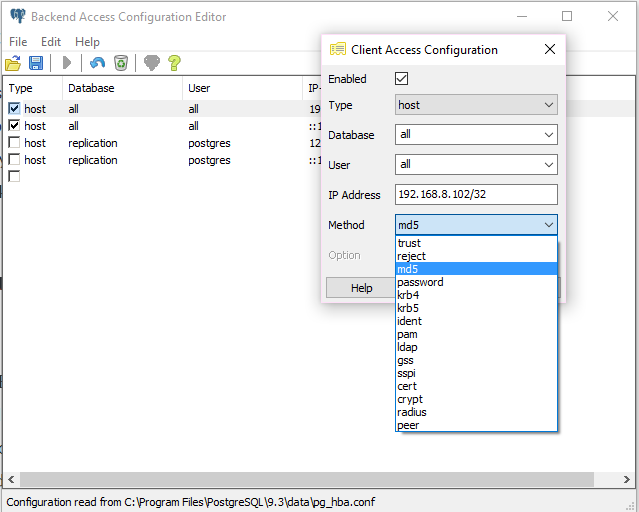
Slika 5. pg_hba.conf - datoteka konfiguracije autentikacije klijenata
{kind=link}
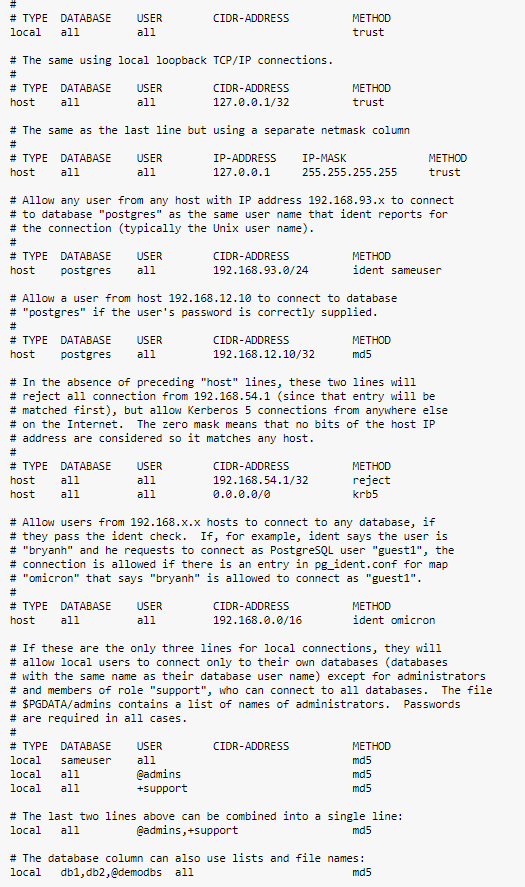
Slika 6. pg_hba.conf - mogućnosti
{kind=link}
Prava pristupa objektima pod kontrolom korisnika
Sljedeća slika prikazuje kako korisnik 'patrik' može dobiti popis korisničkih računa i njihovih odgovarajućih svojstava. Obični korisnik ne može pristupiti lozinkama.
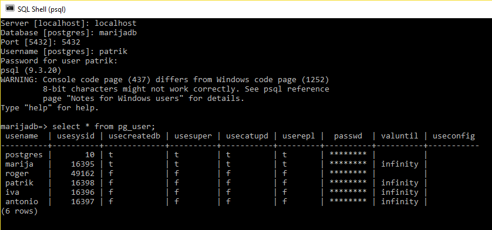
Slika 8. Mogućnost pristupa korisničkim računima
{kind=link}
Kreiranje i pristupanje korisnički definiranim funkcijama
Za razliku od tablica, obični korisnički račun ne zahtijeva posebna dopuštenja kada poziva tuđu funkciju, čak i ako ih je stvorio superuser. Na sljedećoj slici vidimo da ukoliko ne oduzmemo prava pristupa javnoj shemi, običan korisnik može pristupiti funciji.
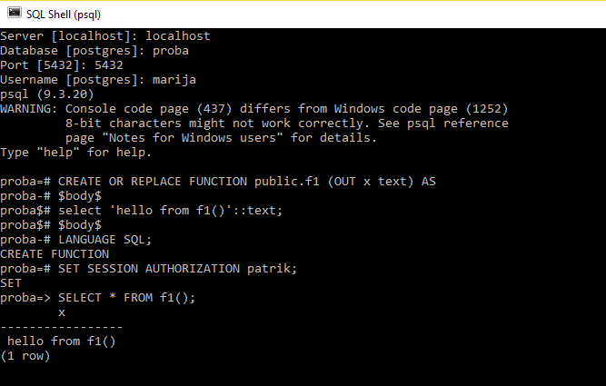
Slika 9. Pristup funkciji od strane običnog korisnika
{kind=link}
Na sljedećoj slici možemo vidjeti kako se zaštititi od neovlaštenog pristupa korisnički definiranih funkcija.
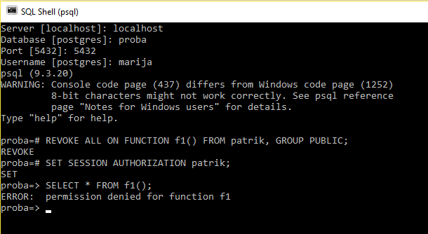
Slika 10. Oduzimanje prava pristupa funkciji
{kind=link}
Security definer
Security definer izvršava funkciju s privilegijama korisnika koji ju je stvorio, stoga korisnik može pristupiti tablici koja je u normalnim okolnostima inače nedostupna.
Na primjer, kao što je prikazano na sljedećim slikama, korisnik marija (administrator i superuser) je kreirao tablicu s dva stupca.
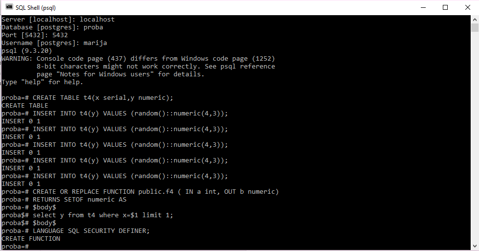
Slika 11. Kreiranje funkcije od strane admina
{kind=link}
Običan korisnik, iva, pozvat će funkciju pomoću parametra SECURITY DEFINER i dobiti vrijednost na temelju ulazne vrijednosti.
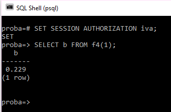
Slika 12. Pristup funkciji pomoću security definer-a
{kind=link}
Kako bi spriječili nedopušten pristup korisnički definiranim funkcijama, treba se napraviti sljedeće:
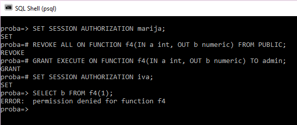
Slika 13. Zabrana pristupa funkciji pomoću security definer-a
{kind=link}
Javna shema
Prema zadanim postavkama, PostgresSQL koristi javnu shemu koja se koristi za pohranu informacija o bazama podataka, tablicama i procedurama. Ta shema prema zadanim postavkama dostupna je svim korisnicima, tako da svi mogu vidjeti strukturu ili procedure svake tablice. Korisnik može, primjerice, "data mine-ati" tablice. Čak bi bilo moguće mijenjati ih dodavanjem pravila i okidača, spremajući podatke u tablicama koje se nalaze u javnoj shemi, te ih zatim pokupiti. Prema tome, treba ukloniti javnu shemu tako da ona ne bude dostupna svim korisnicima. To možemo postići naredbom REVOKE.
Na sljedećoj slici možemo vidjeti da je korisnik 'antonio' (koji ima prava običnog korisnika) upisao \d čime vidi strukturu svih tablica koje trenutno postoje u bazi 'marijadb'.
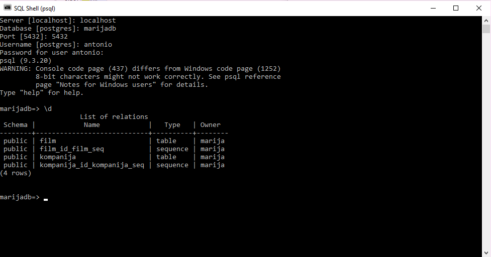
Slika 14. Mogućnost pristupa strukturi tablica
{kind=link}
Kako bi onemogućili korisnicima da imaju uvid u strukturu, ali i mogućnost bilo kakvog mijenjanja javne sheme, administrator treba napraviti sljedeće:
- Zabrana mijenjanja i pristupanja javnoj shemi
- Kreiranje nove sheme naziva 'myschema'
- Modifikacija putanje korisnika naredbom SET search_path TO myschema,public. Na taj će se način struktura baze podataka pohraniti u privatnoj shemi i pristup će biti zajamčen samo pravom korisniku
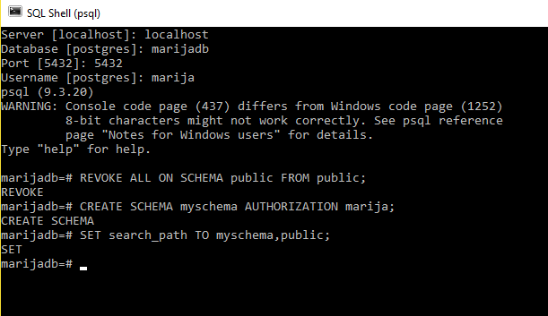
Slika 15. Uklanjanje zadane javne sheme
{kind=link}
Za sigurnost, search_path bi trebao biti postavljen tako da isključuje sheme koje mogu pisati nepouzdani korisnici.
Na kraju možemo vidjeti kako korisnik 'antonio' nakon što upiše \d više ne može vidjeti strukturu tablica.
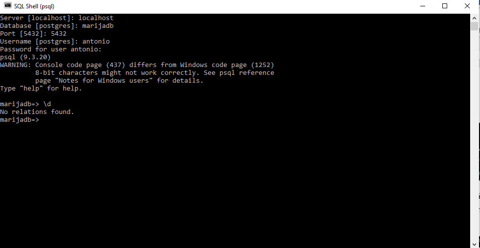
Slika 16. Nemogućnost pristupa strukturi tablica
{kind=link}
Sigurnosna kopija (Back-up)
Kao i sa svime što sadrži vrijedne podatke, PostgreSQL baze podataka trebaju biti redovito back-upirane. Iako je postupak u osnovi jednostavan, važno je imati jasno razumijevanje temeljnih tehnika i pretpostavki.
Postoje tri temeljno drugačija pristupa backupu PostgreSQL podataka:
- SQL dump
- Sigurnosna kopija na razini datotečnog sustava (File system level backup)
- Kontinuirano arhiviranje (Continuous archiving)
SQL dump
Kreiranje sigurnosne kopije Ideja iza ove metode jest generiranje tekstualne datoteke s SQL naredbama koje će, kada se vrati na poslužitelj, ponovno stvoriti bazu podataka u istom stanju kakva je bila prije izvršenja naredbe pg_dump. Dobro je napomenuti kako pg_dump ne radi s posebnim dozvolama. Konkretno, mora imati pristup čitanju svim tablicama za koje želite napraviti back-up, tako da se u praksi gotovo uvijek morati pokrenuti kao superuser baze podataka.
Opći oblik naredbe izgleda ovako:
- pg_dump -U <korisnicko_ime> <ime_baze_podataka> > <ime_izlazne_datoteke.sql>
- pg_dump -U marija proba > kopija.sql
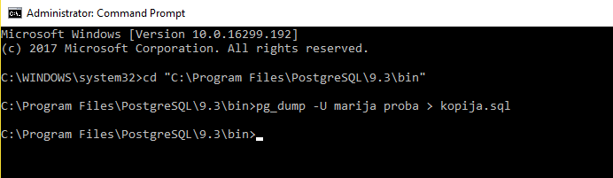
Slika 17. Kreiranje sigurnosne kopije u Command Promptu
{kind=link}
Vraćanje sigurnosne kopije
Da bi mogli vratiti sigurnosnu kopiju prvo je potrebno kreirati novu bazu podataka u koju ćemo prenijeti sve iz sigurnosne kopije.
Opći oblik naredbe za vraćanje kopije je:
- psql -U <korisnicko_ime> <ime_baze_podataka> < <ime_datoteke.sql>
Prema zadanim postavkama, psql skripta nastavit će se izvršavati nakon pogreške. Stoga bi bilo dobro pokrenuti psql s ON_ERROR_STOP setom varijabli kako bi promijenili to ponašanje te kako bi mogli izaći ako dođe do pogreške:
- psql -U <korisnicko_ime> -- set ON_ERROR_STOP=on <ime_baze_podataka> < <ime_datoteke.sql>.
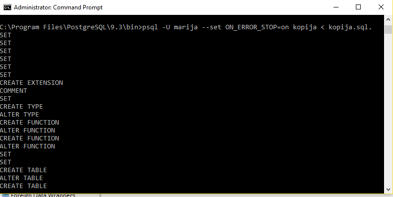
Slika 18. Vraćanje sigurnosne kopije u Command Promptu
{kind=link}
Nakon što smo prenijeli sve u novu bazu podataka, možemo vidjeti na sljedećoj slici kako administrator sada ima pristup svim elementima iz stare baze podataka.
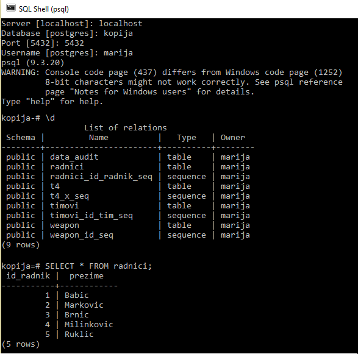
Slika 18. Pristup elementima nove baze podataka
{kind=link}
Ukoliko imamo više baza podataka, ovim načinom bismo morali izrađivati sigurnosne kopije za svaku bazu podataka. Ukoliko imamo cluster baza podataka na istome serveru, možemo koristiti naredbu pg_dumpall. Primjer jedne takve naredbe je: pg_dumpall > "cluster.sql". Ukoliko želimo prenijeti podatke iz takve datoteke trebamo koristiti naredbu psql -f "cluster.sql" <ime_baze_podataka (obicno postgres)>.
Važna prednost pg_dumpa nad ostalim metodama sigurnosnog kopiranja je da se datoteka napravljena kao izlaz naredbe pg_dump općenito može ponovno učitati u novije verzije PostgreSQL-a, dok su sigurnosna kopija na razini datotečnog sustava i kontinuirano arhiviranje ekstremno specificirane na verziju servera. pg_dump je također jedina metoda koja će raditi pri prijenosu baze podataka na drugu arhitekturu, kao što je npr. prelazak s 32-bitnog na 64-bitni poslužitelj.
Sigurnosna kopija na razini datotečnog sustava
Alternativna strategija sigurnosnog kopiranja je izravno kopiranje datoteka koje PostgreSQL koristi za pohranu podataka u bazi podataka tar -cf backup.tar /usr/local/pgsql/data Međutim, postoje dva ograničenja koja ovu metodu čine nepraktičnom ili barem inferiornom metodom od pg_dump-a
- Server baze podataka mora biti isključen kako bi se dobila upotrebljiva sigurnosna kopija. Polu-mjere poput onesposobljavanja svih veza neće raditi. Nepotrebno je reći kako se server mora isključiti i prije vraćanja podataka.
- Ako ste došli do pristupa podacima o izgledu datotečnog sustava baze podataka, možda ćete biti u iskušenju pokušavanja sigurnosnog kopiranja ili vraćanja samo određene pojedinačne tablice ili baze podataka iz njihovih odgovarajućih datoteka ili direktorija. To neće funkcionirati jer se informacije sadržane u tim datotekama ne mogu koristiti bez "commit log" datoteka, pg_clog/*, koji sadrže status commit-ova svih transakcija. Također je nemoguće vratiti samo tablicu i asocirane pg_clog podatke jer bi se sve druge tablice u bazi podataka učinile beskorisnima.
Sigurnosna kopija datotečnog sustava funkcionira samo za potpuni sigurnosni backup i obnavljanje cijelog klastera baze podataka.
Kontinuirano arhiviranje
U svakom trenutku, PostgreSQL održava zapisivanje u pg_xlog / poddirektorij direktorija klastera podataka. Zapisnik bilježi svaku promjenu napravljenu u podatkovnim datotekama baze podataka. Zapisnik postoji prvenstveno za sigurnosne svrhe: ako sustav padne, baza podataka se može vratiti ns prethodno stanje ponovnim unosom zapisnika od zadnje kontrolne točke.
SEPostgreSQL
Većina postojećih sustava za upravljanje relacijskom bazom podataka primjenjuju vlastite kontrole pristupa, primjerice naredbe GRANT i REVOKE, bez suradnje s operacijskim sustavom. To može rezultirati nedosljednim kontrolama pristupa u usporedbi s onima na datotečnom sustavu.
SE-PostgreSQL je ugrađeno (built-in) poboljšanje PostgreSQL-a, koje pruža precizne obvezne kontrole pristupa (eng. mandatory access control) za objekte baze podataka te donosi odluke o kontroli pristupa temeljenim na SELinux sigurnosnoj politici.
Dizajn većine ovih značajki temelji se na modelu referentnog monitora koji omogućava upravljanje cijelim sustavom centraliziranom sigurnosnom politikom.
Model referentnog monitora pretpostavlja da upravitelji objekata (npr. operacijski sustavi) mogu prihvatiti sve pristupe sustavu, a zatim donositi odluke o tome je li taj pristup dozvoljen ili odbijen. Sustav za upravljanje relacijskom bazom podataka (RDBMS) je upravitelj objekata za objekte baze podataka, slično operacijskim sustavima koji su upravitelji objekata za objekte datotečnih sustava.
Ranije su sustavi za upravljanje relacijskim bazama podataka donosili odluke o kontroli pristupa neovisno o centraliziranoj sigurnosnoj politici te se trebala pažljivo skrbiti za održavanje dosljednosti između operacijskog sustava i sustava za upravljanje bazom podataka.
SEPostgreSQL pruža sljedeće značajne značajke:
Obavezne kontrole pristupa (Mandatory Access Controls)
PostgreSQL koristi koncept superuser-a baze podataka koji može zaobići (bypass) sve kontrole pristupa nativnog PostgreSQL-a. Naprotiv, SE-PostgreSQL provodi kontrolu pristupa svakog klijenta, bez iznimke, čak i ako je klijent superuser baze podataka. Klijenti mogu pristupiti objektima baze podataka samo kada pristup dopušta i nativni PostgreSQL i SE-PostgreSQL.
Primjer:
SELECT a,b FROM t WHERE c = 'aaa'
Nativni mehanizam privilegije baze podataka prvo provjerava ima li trenutačna uloga (role) baze podataka privilegiju superuser-a baze podataka, ili ne. Ako uloga ima navedenu privilegiju, ostatak provjera odobrenja se zaobilazi. U suprotnom, provjerava naredbu SELECT na tablici t. Ako nije dopušteno, ona također provjerava naredbu SELECT nad svim referenciranim stupcima.
SE-PostgreSQL provjerava sve potrebne dozvole pojedinačno. Ako klijent baze podataka pokuša izvršiti određenu akciju kao superuser baze podataka, provjerava naredbu db_database:{superuser}. Zatim također provjerava db_table:{select} za tablicu t i db_column:{select} na stupcu a, b i c pojedinačno, neovisno o odluci o kontroli pristupa nad db_database:{superuser} i db_table:{select }.
Ovo prikazuje načelo SELinuxa. Njegov sigurnosni model donosi odluke o tome može li korisnik izvršiti određenu operaciju na određenom objektu ili ne, temeljenu samo na odnosu između korisnika i objekta kojem se pristupa. Nikada nije nadjačano bilo kojim drugim dozvolama (eng. permissions), kao što je db_database: {superuser}. Ta se osobina naziva analizibilnost sigurnosne politike.
Precizne kontrole pristupa (Fine-grained Access Controls)
Granularnost kontrole pristupa ovisi o sustavu za upravljanje relacijskom bazom podataka. SE-PostgreSQL omogućuje da kontrola pristupa bude konfigurirana na razini stupaca i redaka. Stupci i redci su najmanja jedinica objekata baze podataka. Kontrola pristupa nad tim objektima omogućuje administratorima baze podataka da primjenjuju fleksibilnu kontrolu pristupa nad njima.
Dosljednost kontrole pristupa (Consistency in Access Controls)
SELinux zahtijeva da svi procesi i objekti imaju sigurnosni kontekst koji predstavljaju njegove privilegije i atribute. SE-PostgreSQL dodjeljuje sigurnosni kontekst nad svakim objektom baze podataka i donosi odluke kontrole pristupa na temelju privilegija i atributa. SE-PostgreSQL treba sigurnosne kontekste (Security Context) da donese svoje odluke. Ovo je bitna značajka za konzistentnost u kontroli pristupa, time što su privilegije za klijente i atributi za objekte zastupljeni u istom obliku.
Literatura
[1] IBM, Total security in a PostgreSQL database, Preuzeto sa: https://www.ibm.com/developerworks/library/os-postgresecurity/
[2] Trustwave, Helping to Secure your PostgreSQL Database, Preuzeto sa: https://www.trustwave.com/Resources/SpiderLabs-Blog/Helping-to-Secure-your-PostgreSQL-Database/
[3] Wiki, SEPostgreSQL Development, Preuzeto sa: https://wiki.postgresql.org/wiki/SEPostgreSQL_Development
[4] Kohei K., Security-Enhanced PostgreSQL, Preuzeto sa: http://www.pgcon.org/2008/schedule/attachments/38_pgcon2008-sepostgresql.pdf
[5] PostgreSQL, PostgreSQL 8.3.23 Documentation, Preuzeto sa: https://www.postgresql.org/docs/8.3/static/auth-pg-hba-conf.html
[6] OWASP, Backend Security Project PostgreSQL Hardening, Preuzeto sa: https://www.owasp.org/index.php/OWASP_Backend_Security_Project_PostgreSQL_Hardening
[7] PostgreSQL 9.1.24 Documentation, File System Level Backup, Preuzeto sa: https://www.postgresql.org/docs/9.1/static/backup-file.html
[8] PostgreSQL 9.1.24 Documentation, SQL Dump, Preuzeto sa: https://www.postgresql.org/docs/9.1/static/backup-dump.html
[9] PostgreSQL 9.1.24 Documentation, Continuous Archiving and Point-in-Time Recovery (PITR), Preuzeto sa: https://www.postgresql.org/docs/9.1/static/continuous-archiving.html